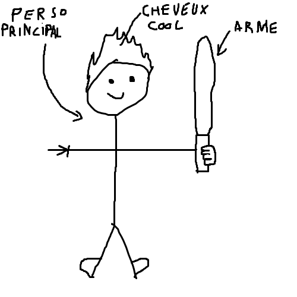
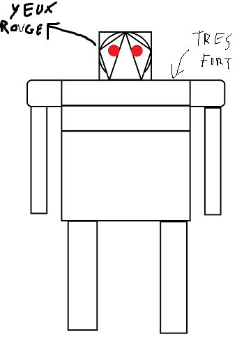

Just a feeling est un jeu d'exploration et d'aventure parodique developpé
par le studio indépendant "Your average indie game dev", dans lequel le personnage
principal a pour mission de sauver le monde contre un être surpuissant.
Le jeu est surtout humouristique, poussant a l'extreme les stereotypes
souvent rencontrés dans ce genre de jeux. Le jeu est en phase de developpement
peu avancée, et quand une démo sera disponible, sera publiée sur le github du
développeur en chef a ce lien ci.
ceci est le personnage principal, il est cool et il a une épée
lui c'est bob, il est méchant car il a les yeux rouges et il est très très fort
